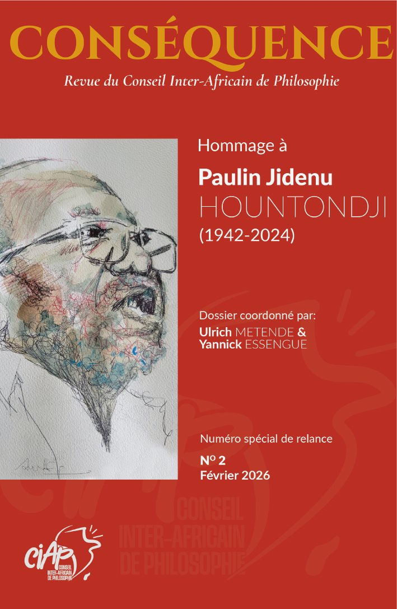
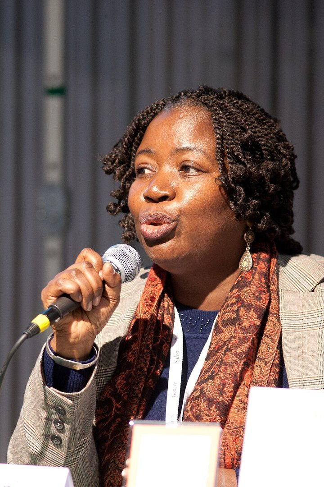
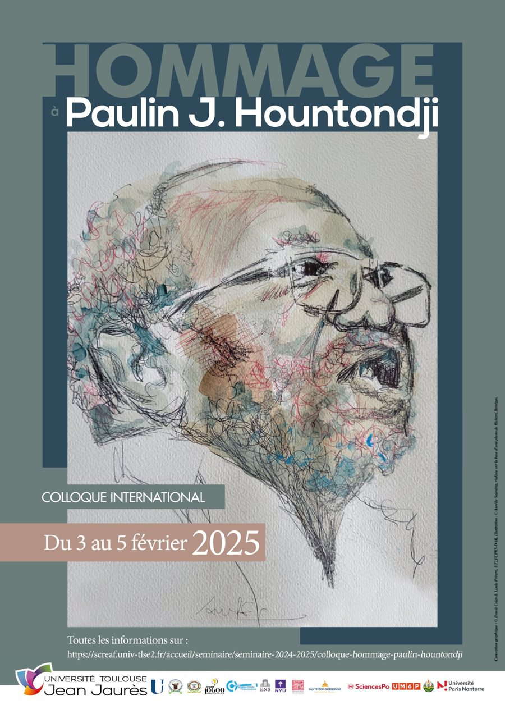

Philosopher au présent,
penser ensemble le futur
Le CIAP se donne pour projet de rassembler les sociétés de philosophie du continent et de ses diasporas, francophones et anglophones, afin de porter ensemble la philosophie africaine au XXVIe Congrès mondial de philosophie, au Japon, en 2028. Sa relance est née au Congrès mondial de Rome, en 2024.


Tanella Boni
Figure capitale de la relance du CIAP et de la présence africaine au sein de la Fédération Internationale des Sociétés de Philosophie, Tanella Boni a porté la voix de la philosophie africaine dans le monde, avec une exigence et une générosité que le Conseil n’oubliera pas.
Mot au nom de tous (CIAP) pour Tanella Boni
Au moment où je me prépare à écrire un mot en hommage à Tanella BONI, je reçois un courriel du Professeur Abdoulaye Elimane KANE, Président du Conseil Interafricain de Philosophie (CIAP) de me commettre à la tâche de le faire au nom de tous. Ce « tous » questionne, car il dépasse le cercle déjà large des membres du CIAP, de la communauté africaine de philosophie pour rassembler au niveau international, les membres des communautés philosophiques, littéraires et poétiques d’Europe, d’Asie, d’Amérique et de l’Océan indien. Oui, c’est ce vaste espace habité et imaginé du monde qui est l’espace philosophique, littéraire et poétique de Tanella BONI. Un espace de liberté, de respect, de justice, de créativité, de dignité, d’égalité entre tous, femmes et hommes ; ainsi que d’humanité en partage dans la quête incessante de l’universel au sein duquel le continent africain ne cesse de vibrer en résonnance dans le monde enchanté de la nature végétale et animale.
De tout temps et depuis surtout l’année 2016 jusqu’en 2026 notamment, Tanella BONI s’est mise à l’écoute de toutes et de tous de par le monde, en dialoguant, en riant et en réfléchissant toujours dans la tempérance, la retenue, même envers celles et ceux qui frontalement croyaient se jouer de sa gentillesse, de sa sagesse philosophique et du don de soi. Elle seule savait ce que valent la dignité et le respect de soi et des autres dans un monde en perpétuelle mutation sociale, économique, politique et culturelle. Que l’on pense entre autres, au colloque international de 2016 qu’elle a organisé à Abidjan sur « Les politiques de la dignité » ; aux différentes sessions de Poéticales de Côte-d’Ivoire, au 25e Congrès mondial de la Fédération internationale des Sociétés de Philosophie (FISP) à Rome (Italie) en août 2024 sur le thème « La philosophie au-delà des frontières » ; au colloque international organisé à Cotonou (Bénin) du 3 au 5 février 2025 en hommage à Paulin Hountondji ; aux Journées scientifiques que nous avons co-organisées les 24 et 25 juin 2025 à l’Université de Pau et des Pays de l’Adour (France) sur le thème « La philosophie africaine et les archives ». Il s’agit de savoir comment penser la philosophie africaine dans ses rapports avec les archives orales et écrites situées aussi bien sur le continent africain que sur d’autres continents comme l’Europe ? Surtout, lorsque l’on sait que la philosophie doit recourir aux sources orales et écrites explorées par l’histoire, l’archéologie, la littérature et la linguistique par exemple, pour élucider le sens réel ou apparent que recèlent les documents oraux, sonores, photographiques et écrits qui sont des mémoires archivées qui convoquent le plus souvent le souvenir du sujet et/ou des sujets au sein de la société ? C’est un des projets en chantier que Tanella BONI entendait réaliser collectivement.
Enfin, la relance du CIAP et la parution imminente du numéro 2 de la Revue Conséquence CIAP, et pour laquelle elle et moi avons co-signé l’éditorial, devait marquer le renouvellement institutionnel de ce précieux instrument philosophique. Elle a accepté avec enthousiasme d’en être la Directrice. En m’envoyant au mois de mai 2026, ainsi qu’à Marie-Rose ABOMO MAURIN, son dernier ouvrage intitulé Femmes au bord du temps portant la préface d’Aloyse-Raymond NDIAYE et la postface de Stéphane DOUAILLIER et de Françoise SIMASOTCHI-BRONES, Tanella BONI nous fait comprendre ceci, dans un des passages des poèmes de cet ouvrage (p. 17) : « En réalité le maître du Temps n’a pas de nom. Il se reconnaît par sa présence interminable ». Ces trois projets dont elle porte la marque, à savoir Poéticales, la question des archives en philosophie et la direction de la Revue Conséquence, sont le legs précieux de Tanella BONI pour la philosophie, la littérature et la poésie. Que ses idées demeurent éternelles…
Coprésidente de la réunion du 26 juillet 2025 qui a officialisé la relance du Conseil ; directrice de publication de Conséquence avec Abel Kouvouama.
Vice-présidente de la Fédération Internationale des Sociétés de Philosophie (2013-2018) ; présente au XXVe Congrès mondial de Rome en 2024.
Vice-présidente du Conseil international de la philosophie et des sciences humaines (2002-2006).
Professeure à l’Université Félix Houphouët-Boigny, porteuse des Poéticales de Côte d’Ivoire ; prix Ahmadou-Kourouma 2005 pour Matins de couvre-feu.
Veillée académique « La femme monde » — hommage pluridisciplinaire organisé par les départements de philosophie et de lettres modernes de l’Université Félix Houphouët-Boigny.
Fédérer les sociétés de philosophie d’Afrique et des diasporas
Depuis 1973, la raison d’être du CIAP n’a pas changé : relier les sociétés nationales, les départements et les chercheurs pour que l’Afrique parle d’une voix commune dans les instances philosophiques internationales.
Les sociétés nationales
Reconstituer le réseau des sociétés nationales de philosophie et des départements, de Dakar à Nairobi, de Lubumbashi à Lagos.
Francophones et anglophones
Le versant anglophone du CIAP s’appuie sur l’African Philosophy Society, pour une fédération réellement continentale.
African Philosophy SocietyAuprès de la FISP
Affilier le CIAP à la Fédération Internationale des Sociétés de Philosophie et y porter une présence africaine unifiée.
Tokyo 2028
Préparer la participation fédérée des sociétés africaines au XXVIe Congrès mondial de philosophie, au Japon, du 16 au 23 août 2028.
Inscrire sa sociétéUne filiation qui se poursuit
Plusieurs figures de 1973 accompagnent la relance : Abdoulaye Elimane Kane, premier vice-président en 1973, préside aujourd’hui le CIAP ; Aloyse-Raymond Ndiaye, trésorier fondateur, siège au bureau ; et l’œuvre de Paulin Hountondji, premier secrétaire général, inspire le numéro de relance de Conséquence.
De Cotonou à Tokyo, une fédération qui renaît
Le CIAP se donne pour projet de rassembler sociétés savantes, départements et chercheurs en philosophie d’Afrique et des diasporas. En lien avec la Fédération Internationale des Sociétés de Philosophie (FISP), il entend porter la voix philosophique du continent dans les instances internationales.
- 1973
Fondation à Cotonou
Le 3 janvier, Sodipo, Kane, Wiredu, Hountondji, Ndiaye et Oruka créent le Conseil Inter-Africain de Philosophie.
- 1974
Premier numéro de Conséquence
Il publie les statuts et les orientations philosophiques du Conseil. Faute de moyens, la revue entre ensuite en sommeil.
- Mise en veille
Des décennies de silence
Faute de moyens, le CIAP et sa revue cessent leurs activités ; le souvenir persiste chez les générations formées par les pionniers.
- Rome 2024
La relance naît au Congrès mondial
Au XXVe Congrès mondial de philosophie (août 2024), les philosophes africains présents constatent l’absence d’organisation panafricaine unifiée auprès de la FISP et appellent à refonder le CIAP.
- Fév. 2025
Retour à Cotonou
Le colloque international d’hommage à Paulin J. Hountondji recommande de réactiver Conséquence et d’élire un bureau transgénérationnel. Voir le colloque
- Juil. 2025
Réactivation officielle
Réunion du 26 juillet : direction de la revue confiée à Tanella Boni et Abel Kouvouama.
- 2026
Numéro spécial de relance
Hommage à Paulin J. Hountondji, plus de cinquante ans après le premier numéro.
- Tokyo 2028
Une présence africaine fédérée
Participation unifiée des sociétés africaines au XXVIe Congrès mondial de philosophie, précédée du Congrès panafricain d’Addis-Abeba.
Colloque international Hommage à Paulin J. Hountondji
Dans la ville natale de Paulin Hountondji, premier secrétaire général du CIAP, l’Université d’Abomey-Calavi a accueilli trois jours de travaux tenus simultanément avec Rabat, Paris-Nanterre et Toulouse. Les textes de ce colloque forment le numéro de relance de Conséquence.



Le bureau
Conséquence
Articles inédits, traductions et recensions en philosophie africaine, évalués en double aveugle. Publication en français, en anglais et dans les principales langues africaines.
Chaque article est réservé aux membres du CIAP pendant un an après la parution, puis passe automatiquement en accès libre. Libre accès pour ce numéro : .
Conséquence, n°1 · 1974
Le numéro fondateur, avec les statuts du CIAP : numérisation en cours.
Prochain numéro
Thème et calendrier annoncés prochainement par le comité de rédaction.
Direction
Abel Kouvouama
Tanella Boni †Directeurs de publication
Paul Christian Kiti
Ulrich MetendeRédacteurs en chef
Yannick EssengueSecrétaire de rédaction & design
Comité scientifique
Abdoulaye Elimane Kane · Abel Kouvouama · Abosede Priscilla Ipadeola · Aloyse-Raymond Ndiaye · Désiré Medegnon · Souleymane Bachir Diagne · Tanella Boni † · Emmanuel Banywesize · Dismas A. Masolo
Rédaction & lecture
Alfred Gambou · Florence BottiRédacteurs
Grison-Trésor Kakumbi · Philippe Nguemeta · Kouamé Hyacinthe KouakouComité de lecture
Plan triennal 2025 – 2028
Refonder
- Installation du bureau et des comités
- Relance de la revue Conséquence
- Nouvelle identité et site du CIAP
Rassembler
- Assemblée générale du CIAP
- Réseau des sociétés nationales
- Séminaires et journées d’étude
Rayonner
- Congrès panafricain de philosophie
- Présence africaine au Congrès mondial
- Publications et partenariats
Assemblée générale : statuts, programme et adhésions.
Congrès panafricain de philosophie.
XXVIe Congrès mondial de philosophie.
Rejoindre le Conseil
Les membres du CIAP accèdent aux articles de Conséquence dès leur parution, participent à l’assemblée générale et aux congrès.
Membre institutionnel
Sociétés savantes, départements, centres de recherche.
Membre individuel
Enseignants-chercheurs et chercheurs indépendants.
Jeune chercheur
Doctorantes, doctorants et jeunes docteurs.